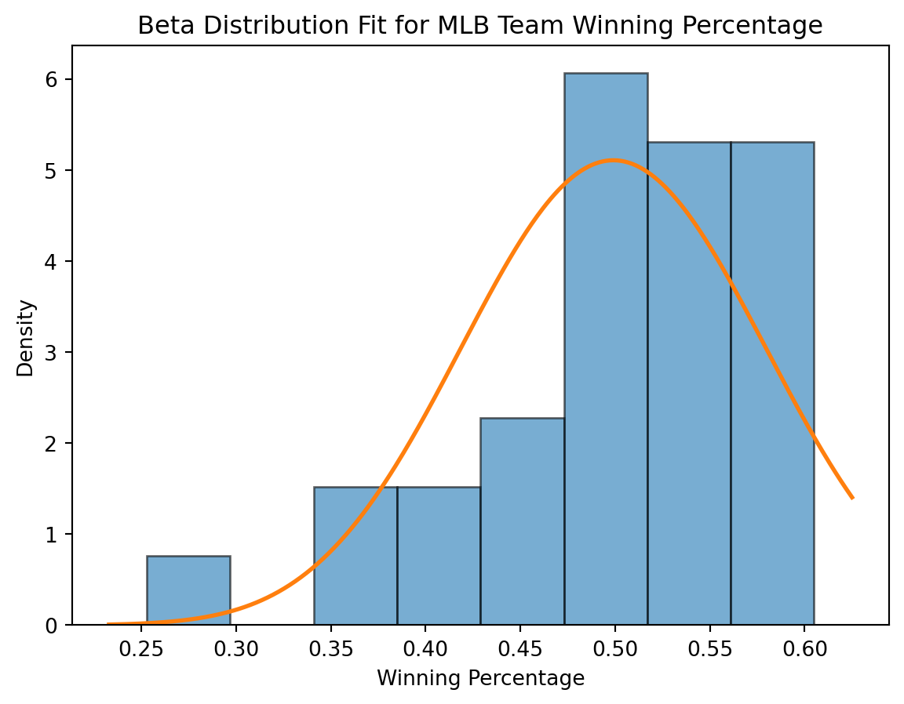
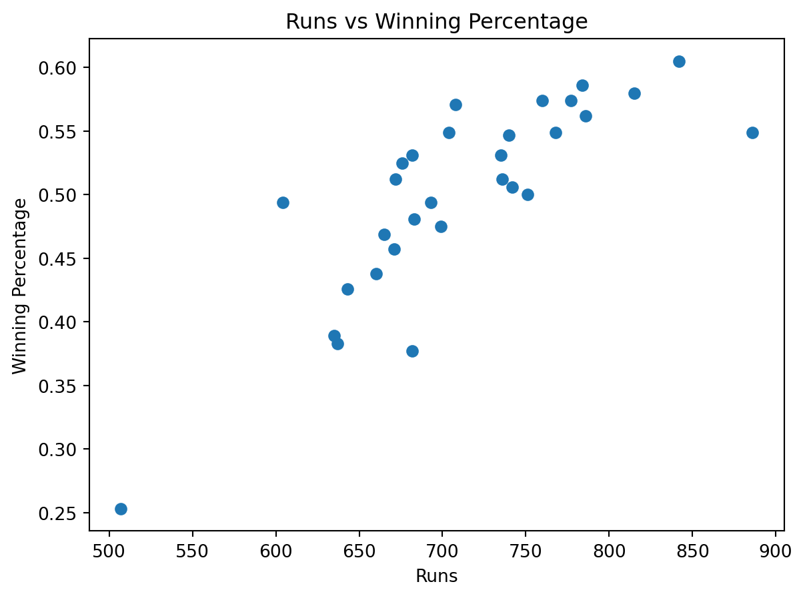
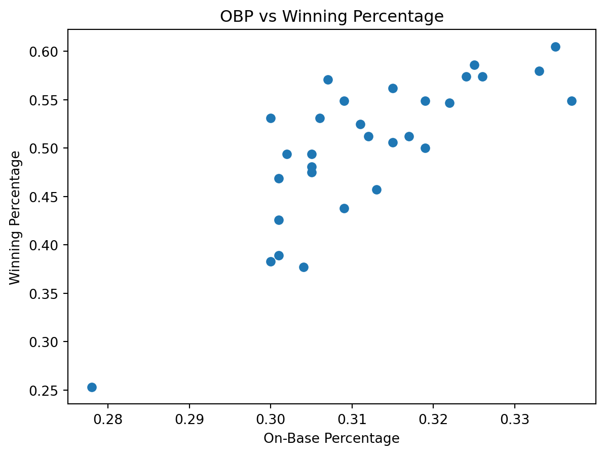

import pandas as pd
import numpy as np
import matplotlib.pyplot as plt
from scipy.stats import beta, t, ttest_1samp, pearsonrMLB Team Success Using Non-Correlated Variables, Beta Distribution, and Statistical Inference
1. Introduction
The purpose of this project is to study MLB team success in a way that avoids heavily overlapping offensive variables and also includes statistical inference. Instead of using a classification model like logistic regression, this report models team winning percentage as a continuous outcome using a Beta distribution and adds inference tools such as confidence intervals, hypothesis testing, and selected correlation tests.
The main questions are:
- How is team success distributed across the league?
- Do a few less-correlated offensive variables still show meaningful relationships with winning percentage?
2. Import Libraries
3. Load and Prepare the Data
batting = pd.read_csv("Data/mlb_team_batting_2024.csv")
standings = pd.read_csv("Data/mlb-standings-2024.csv")
batting = batting[~batting["Tm"].isin(["LgAvg per 600 PA", "MLB Total"])].copy()
batting = batting[["Tm", "R", "HR", "OBP", "SB"]].copy()
standings = standings.rename(columns={
"Team": "Tm",
"W-L%": "Win%",
"W-L% ": "Win%",
"Pct": "Win%",
"WPct": "Win%",
"Lg": "League"
})
standings = standings[["Tm", "Win%", "League"]].copy()
def clean_team_name(name):
name = str(name).strip()
name = name.replace("Arizona Diamondbacks", "Arizona D'Backs")
return name
batting["Tm"] = batting["Tm"].apply(clean_team_name)
standings["Tm"] = standings["Tm"].apply(clean_team_name)
mlb = batting.merge(standings, on="Tm", how="inner")
print("Merged dataset shape:", mlb.shape)
mlb.head()Merged dataset shape: (30, 7)| Tm | R | HR | OBP | SB | Win% | League | |
|---|---|---|---|---|---|---|---|
| 0 | Arizona D'Backs | 886 | 211 | 0.337 | 119 | 0.549 | NL |
| 1 | Atlanta Braves | 704 | 213 | 0.309 | 69 | 0.549 | NL |
| 2 | Baltimore Orioles | 786 | 235 | 0.315 | 98 | 0.562 | AL |
| 3 | Boston Red Sox | 751 | 194 | 0.319 | 144 | 0.500 | AL |
| 4 | Chicago Cubs | 736 | 170 | 0.317 | 143 | 0.512 | NL |
This creates a clean team-level dataset for the analysis. Using a smaller set of variables makes the project easier to interpret and reduces the multicollinearity problem that came up before.
4. Check Correlation Among Chosen Variables
corr_vars = mlb[["R", "HR", "OBP", "SB", "Win%"]].corr().round(3)
corr_vars| R | HR | OBP | SB | Win% | |
|---|---|---|---|---|---|
| R | 1.000 | 0.789 | 0.929 | 0.052 | 0.810 |
| HR | 0.789 | 1.000 | 0.703 | -0.230 | 0.672 |
| OBP | 0.929 | 0.703 | 1.000 | 0.127 | 0.789 |
| SB | 0.052 | -0.230 | 0.127 | 1.000 | 0.100 |
| Win% | 0.810 | 0.672 | 0.789 | 0.100 | 1.000 |
These results show how strongly the selected variables relate to each other and to winning percentage. This helps justify using a smaller group of offensive variables instead of many highly overlapping hitting stats.
5. Summary of Winning Percentage
win = mlb["Win%"]
win.describe()count 30.000000
mean 0.499967
std 0.077075
min 0.253000
25% 0.470500
50% 0.512000
75% 0.549000
max 0.605000
Name: Win%, dtype: float64This summary shows the basic center and spread of MLB winning percentage in 2024. Since winning percentage is bounded between 0 and 1 and is centered near 0.500, it makes sense to test a Beta distribution.
6. Statistical Inference for Mean Winning Percentage
6.1 95% Confidence Interval for Mean Win%
n = len(win)
sample_mean = win.mean()
sample_sd = win.std(ddof=1)
se = sample_sd / np.sqrt(n)
t_crit = t.ppf(0.975, df=n-1)
ci_low = sample_mean - t_crit * se
ci_high = sample_mean + t_crit * se
print("Sample mean:", round(sample_mean, 4))
print("Sample standard deviation:", round(sample_sd, 4))
print("95% CI for mean Win%:", (round(ci_low, 4), round(ci_high, 4)))Sample mean: 0.5
Sample standard deviation: 0.0771
95% CI for mean Win%: (np.float64(0.4712), np.float64(0.5287))This confidence interval gives a range of reasonable values for the true average team winning percentage in the league. It adds statistical inference to the project by showing uncertainty, not just a sample average.
6.2 One-Sample t-Test Against 0.500
t_stat, p_value = ttest_1samp(win, popmean=0.500)
print("t-statistic:", round(t_stat, 4))
print("p-value:", round(p_value, 4))t-statistic: -0.0024
p-value: 0.9981The extremely high p-value (~0.998) shows there is no evidence that the average winning percentage differs from 0.500, meaning teams are essentially centered around .500. This supports that MLB success is balanced across the league, which is why the Beta distribution fits well and shows most teams clustered around the average rather than extreme performance.
7. Beta Distribution Fit
alpha_hat, beta_hat, loc_hat, scale_hat = beta.fit(win, floc=0, fscale=1)
print("Estimated alpha:", round(alpha_hat, 3))
print("Estimated beta:", round(beta_hat, 3))
print("Location:", loc_hat)
print("Scale:", scale_hat)Estimated alpha: 20.685
Estimated beta: 20.756
Location: 0
Scale: 1The estimated alpha and beta parameters describe the shape of the distribution of team success. Because the two values are very similar, the league appears fairly balanced, with most teams clustered around the middle rather than pushed to extreme high or low performance.
8. Beta Distribution Plot
x = np.linspace(win.min() - 0.02, win.max() + 0.02, 400)
y = beta.pdf(x, alpha_hat, beta_hat, loc=0, scale=1)
plt.figure()
plt.hist(win, bins=8, density=True, alpha=0.6, edgecolor="black")
plt.plot(x, y, linewidth=2)
plt.xlabel("Winning Percentage")
plt.ylabel("Density")
plt.title("Beta Distribution Fit for MLB Team Winning Percentage")
plt.show()
The histogram and fitted Beta curve line up closely, showing that team winning percentages follow a smooth, predictable distribution centered around .500. This supports that MLB success is balanced, with most teams near average and relatively few extreme high- or low-performing teams.
beta_mean = alpha_hat / (alpha_hat + beta_hat)
beta_var = (alpha_hat * beta_hat) / (((alpha_hat + beta_hat) ** 2) * (alpha_hat + beta_hat + 1))
print("Sample mean of Win%:", round(win.mean(), 4))
print("Beta mean:", round(beta_mean, 4))
print("Sample variance of Win%:", round(win.var(), 4))
print("Beta variance:", round(beta_var, 4))Sample mean of Win%: 0.5
Beta mean: 0.4991
Sample variance of Win%: 0.0059
Beta variance: 0.0059The Beta mean and variance are very close to the sample mean and variance. That gives evidence that the fitted Beta model is doing a good job of representing the actual distribution of winning percentage.
10. Probability Statements from the Beta Model
prob_above_550 = 1 - beta.cdf(0.550, alpha_hat, beta_hat, loc=0, scale=1)
prob_below_450 = beta.cdf(0.450, alpha_hat, beta_hat, loc=0, scale=1)
print("Estimated probability a team has Win% above .550:", round(prob_above_550, 3))
print("Estimated probability a team has Win% below .450:", round(prob_below_450, 3))Estimated probability a team has Win% above .550: 0.257
Estimated probability a team has Win% below .450: 0.264These results show that only about 25–26% of teams are clearly strong (.550+) or clearly weak (.450−), meaning most teams fall in the middle range. This reinforces the project’s conclusion that MLB performance is tightly clustered around average, and the Beta model helps quantify how rare truly dominant or struggling teams are.
11. Statistical Inference for Relationships with Winning Percentage
results = []
for var in ["R", "HR", "OBP", "SB"]:
r, p = pearsonr(mlb[var], mlb["Win%"])
results.append({
"Variable": var,
"Correlation_with_Win%": round(r, 3),
"p_value": round(p, 4)
})
infer_table = pd.DataFrame(results)
infer_table| Variable | Correlation_with_Win% | p_value | |
|---|---|---|---|
| 0 | R | 0.810 | 0.0000 |
| 1 | HR | 0.672 | 0.0000 |
| 2 | OBP | 0.789 | 0.0000 |
| 3 | SB | 0.100 | 0.5984 |
Runs, OBP, and HR all have strong positive correlations with winning percentage and extremely small p-values, meaning they are statistically significant predictors of team success. In contrast, stolen bases show a very weak relationship and a high p-value, suggesting they do not meaningfully impact winning, which supports the project’s goal of identifying which less-correlated variables truly matter.
12. Simple Visuals for the Selected Variables
12.1 Runs vs Winning Percentage
plt.figure()
plt.scatter(mlb["R"], mlb["Win%"])
plt.xlabel("Runs")
plt.ylabel("Winning Percentage")
plt.title("Runs vs Winning Percentage")
plt.show()
The clear upward pattern shows a strong positive relationship between runs scored and winning percentage. This directly supports the idea that scoring runs is one of the most important drivers of team success, even when using a smaller set of less-correlated variables.
12.2 OBP vs Winning Percentage
plt.figure()
plt.scatter(mlb["OBP"], mlb["Win%"])
plt.xlabel("On-Base Percentage")
plt.ylabel("Winning Percentage")
plt.title("OBP vs Winning Percentage")
plt.show()
There is a clear positive relationship between OBP and winning percentage, showing that teams that get on base more tend to win more games. This supports the idea that OBP is a key offensive metric and remains highly relevant even when reducing correlation among variables.
13. Conclusion
This project aimed to understand how team success is spread across the MLB and which offensive stats matter most for winning. The results show that the winning percentage is centered around 0.500, and the Beta distribution fits this well, meaning most teams are close to average, with only a few that are very strong or very weak.
The analysis also looked at whether a smaller set of less-overlapping stats could still explain success. Runs and on-base percentage both showed strong, meaningful relationships with winning, while the other variables mattered less. This shows that even with fewer stats, the key factors behind winning still stand out.
Overall, the results suggest that MLB teams are fairly balanced and that scoring runs and getting on base are the biggest drivers of success. Using fewer, simpler variables makes these relationships clearer and easier to understand.
14. References
- Hayes, A. (2025). MLB Team Batting Statistics (2024). SCORE Sports Data Repository.
- Sanders, S. (2025). MLB Standings 2024. SCORE Sports Data Repository.
- Baseball-Reference. (2024). 2024 Major League Baseball season statistics.